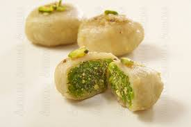

üç• Surti Ghari Recipe

Ingredients
- 1 cup mawa (khoya)
- 1/2 cup powdered sugar
- 1/4 tsp cardamom powder
- 1/4 tsp nutmeg powder
- 1/4 cup chopped dry fruits (cashews, almonds, pistachios)
- 1 cup refined flour (maida)
- 2 tbsp ghee (for dough)
- Ghee for deep frying
- 1/2 cup powdered sugar (for coating)
Instructions
- Prepare dough with maida, ghee, and water. Set aside.
- In a pan, roast mawa until aromatic and slightly golden. Let it cool.
- Add sugar, cardamom, nutmeg, and dry fruits to the cooled mawa. Mix well.
- Divide mawa mixture into small portions and shape them round.
- Roll small circles from dough, place a mawa ball inside, and seal it carefully.
- Deep fry on low-medium heat until golden brown.
- Let them cool, then coat with powdered sugar evenly.
Serve With
- Warm milk or saffron milk
- As a festive sweet during Chandani Padva or Diwali
üí° Tip: Ghari stays fresh for 3‚Äì4 days when stored in an airtight container. Use homemade mawa for the best taste.